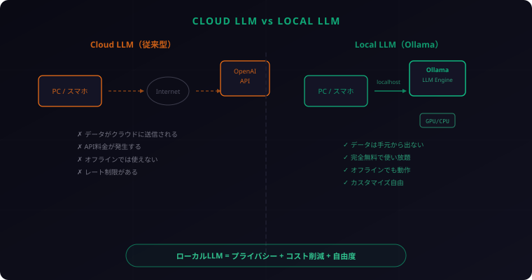
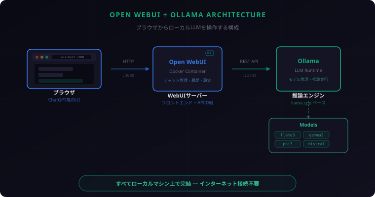

Syntax
Syntax
Ollama + Open WebUI で始めるローカルLLM完全ガイド ― 自分だけのAIを手元で動かそう
クラウドに頼らず、自分のマシンでLLMを動かす。「え、そんなことできるの？」って思うかもしれないけど、やってみると意外と簡単なんです。プライバシーも守れるし、API料金もゼロ。しかもオフラインでも動く。さあ、セットアップしていこう！
1. なぜローカルLLMなのか
ChatGPTやClaude、Geminiといったクラウド型LLMは確かに便利です。でも、すべてのユースケースでクラウドがベストとは限りません。ローカルLLMには、クラウドにはない明確なメリットがあります。
プライバシー: データが外に出ない
ローカルLLMの最大のメリットはデータが自分のマシンから出ないこと。社内の機密文書について質問したい、個人情報を含むデータを処理したい——こういったケースでは、クラウドに送信すること自体がリスクになります。ローカルなら、すべてが手元で完結します。
コスト: API課金ゼロ
クラウドLLMのAPIは従量課金です。開発中に何度もテストを繰り返したり、大量のテキストを処理したりすると、あっという間に請求額が膨らみます。ローカルLLMなら、初期のハードウェアコストだけ。何回使っても追加料金ゼロです。
オフライン利用
飛行機の中、地下鉄、ネット環境のない現場——インターネットに接続できない環境でもLLMが使えます。一度モデルをダウンロードしてしまえば、以降はネットワーク不要です。
カスタマイズの自由度
モデルのパラメータ調整、システムプロンプトの自由な設定、独自データでのファインチューニング。ローカルなら制限なく自分好みにカスタマイズできます。
学習用途に最適
LLMの動作原理を理解したい、推論速度と量子化の関係を体感したい——そういった学習目的には、手元で自由に実験できるローカル環境が最適です。
2. Ollamaとは何か
Ollamaは、ローカルマシンでLLMを簡単に実行するためのオープンソースツールです。Docker的な感覚で「モデルをpullして、runするだけ」。複雑な環境構築なしに、数分でLLMが動き出します。
なぜOllamaが選ばれるのか
- 圧倒的なシンプルさ:
ollama run llama3の1コマンドでモデルのダウンロードから実行まで完了 - クロスプラットフォーム: macOS、Windows、Linux すべてに対応
- REST API内蔵: 起動するだけで
localhost:11434にAPIサーバーが立つ - 豊富なモデル対応: メジャーなオープンソースモデルを網羅
- 自動的なGPU活用: NVIDIA / Apple Silicon のGPUを自動検出して利用
対応モデル一覧
| モデル | 開発元 | 特徴 |
|---|---|---|
| Llama 3 / 3.1 | Meta | 汎用性が高く高品質。8B / 70B / 405B |
| Gemma 2 | 軽量で高性能。2B / 9B / 27B | |
| Phi-3 | Microsoft | 超軽量（3.8B）ながら優秀な推論力 |
| Mistral / Mixtral | Mistral AI | 欧州発の高性能モデル。MoEアーキテクチャ |
| Command R+ | Cohere | RAG特化。多言語対応が強い |
| Qwen 2.5 | Alibaba | 日本語性能が比較的高い |
| DeepSeek Coder | DeepSeek | コーディング特化モデル |

3. Ollamaのインストールと基本操作
さあ、実際にインストールしてみましょう。どのOSでも数分で終わります。
macOS
HomebrewでもDMGでもOK。一番シンプルなのはHomebrew:
brew install ollamaまたは公式サイトからDMGをダウンロードしてインストール。Apple Silicon (M1/M2/M3/M4) なら、GPUが自動的に活用されます。
Windows
公式サイトからインストーラーをダウンロードして実行するだけ。NVIDIA GPUがあれば自動で認識されます。
# Windows (PowerShell) でも同じコマンドで動く
ollama run llama3Linux
公式のインストールスクリプト1行で完了:
curl -fsSL https://ollama.com/install.sh | sh基本コマンド一覧
| コマンド | 説明 |
|---|---|
ollama run llama3 |
モデルを起動（未DLなら自動ダウンロード） |
ollama pull gemma2 |
モデルをダウンロードのみ |
ollama list |
ダウンロード済みモデル一覧 |
ollama rm mistral |
モデルを削除 |
ollama show llama3 |
モデルの詳細情報を表示 |
ollama serve |
APIサーバーを起動（通常は自動起動） |
4. Open WebUIでChatGPT風UIを手に入れる
ターミナルでの会話も悪くないけど、やっぱりChatGPTみたいなWebインターフェースが欲しい。そこでOpen WebUIの出番です。
Open WebUIとは
Open WebUI（旧 Ollama WebUI）は、OllamaのフロントエンドとなるWebアプリケーションです。ブラウザから localhost:3000 にアクセスするだけで、ChatGPTそっくりのUIでローカルLLMと対話できます。
- チャット履歴の保存・管理
- 複数モデルの切り替え
- システムプロンプトのプリセット
- ファイルアップロード（RAG機能）
- マルチユーザー対応
Dockerでのセットアップ
Open WebUIはDockerで動かすのが最も簡単です。Ollamaが起動している状態で、以下のコマンドを実行:
docker run -d -p 3000:8080 \
--add-host=host.docker.internal:host-gateway \
-v open-webui:/app/backend/data \
--name open-webui \
--restart always \
ghcr.io/open-webui/open-webui:mainこれだけ。ブラウザで http://localhost:3000 を開けば、すぐに使えます。
初期設定
- ブラウザで
http://localhost:3000にアクセス - 初回はアカウント作成画面が表示される（ローカルのみ。外部には送信されない）
- 管理者アカウントを作成してログイン
- 設定画面でOllamaの接続先を確認（通常は自動検出される）
- チャット画面でモデルを選択して会話開始！

5. おすすめモデルと使い分け
「モデルが多すぎてどれを選べばいいかわからない」——よく聞く悩みです。用途別におすすめを整理しました。
用途別おすすめモデル
| 用途 | おすすめモデル | メモリ目安 |
|---|---|---|
| 汎用チャット | Llama 3 8B / Gemma 2 9B | 8GB〜 |
| コーディング支援 | DeepSeek Coder / CodeLlama | 8GB〜 |
| 日本語重視 | Qwen 2.5 / Command R | 8GB〜 |
| 軽量・高速 | Phi-3 Mini / Gemma 2 2B | 4GB〜 |
| 高品質（要スペック） | Llama 3 70B / Mixtral 8x7B | 48GB〜 |
GPUメモリとモデルサイズの関係
目安として、モデルパラメータ数(B) × 0.5〜1 GB程度のVRAM（またはユニファイドメモリ）が必要です。たとえば:
- 7〜8Bモデル: 4〜8GB → MacBook Air (M2, 16GB) でも快適に動く
- 13Bモデル: 8〜12GB → 16GB以上のマシン推奨
- 70Bモデル: 35〜48GB → M2 Ultra (192GB) やRTX 4090など高スペック環境向け
量子化（Quantization）とは
モデルの精度を多少犠牲にして、ファイルサイズとメモリ使用量を削減する技術です。Ollamaではデフォルトで量子化済みモデルが配布されています。
- Q4: 最も軽量。品質は少し落ちるが、低スペックでも動かせる
- Q5: バランス型。多くのケースでこれがベスト
- Q8: 高品質。元モデルに近い品質だが、メモリを多く使う
個人的なおすすめは llama3（8B）から始めること。M1 MacBook Airでもサクサク動くし、日本語もそこそこいける。慣れてきたら qwen2.5 で日本語特化を試したり、deepseek-coder でコーディング支援を試すのが楽しいですよ！
6. 実践Tips
基本が動いたら、もう少し踏み込んだ使い方を見ていきましょう。
APIモードで自作アプリから呼び出す
Ollamaは起動するだけで REST APIサーバー（localhost:11434）が立ちます。curlやPythonから直接呼び出せます。
curlでの例:
curl http://localhost:11434/api/generate \
-d '{
"model": "llama3",
"prompt": "Pythonでフィボナッチ数列を生成する関数を書いて",
"stream": false
}'Pythonでの例:
import requests
response = requests.post("http://localhost:11434/api/generate", json={
"model": "llama3",
"prompt": "RESTful APIの設計原則を3つ教えて",
"stream": False
})
print(response.json()["response"])OpenAI互換APIも使えるので、既存のOpenAIライブラリをそのまま流用できます:
from openai import OpenAI
client = OpenAI(
base_url="http://localhost:11434/v1",
api_key="ollama" # ダミーでOK
)
response = client.chat.completions.create(
model="llama3",
messages=[{"role": "user", "content": "Hello!"}]
)
print(response.choices[0].message.content)Modelfileでカスタマイズ
OllamaのModelfileを使えば、システムプロンプトやパラメータを事前に設定したカスタムモデルを作れます。Dockerfileのような感覚で書けます:
# Modelfile
FROM llama3
SYSTEM """
あなたは優秀なシニアエンジニアです。
コードレビューを行い、改善点を具体的に指摘してください。
回答は日本語で行ってください。
"""
PARAMETER temperature 0.3
PARAMETER top_p 0.9これを使ってカスタムモデルを作成:
ollama create my-reviewer -f Modelfile
ollama run my-reviewer複数モデルの切り替え
Ollamaでは複数のモデルをダウンロードしておいて、用途に応じて使い分けられます。Open WebUIならドロップダウンメニューで一瞬で切り替え可能。ターミナルからも:
# 汎用チャット
ollama run llama3
# コーディング
ollama run deepseek-coder
# 日本語重視
ollama run qwen2.57. まとめ
ローカルLLMの世界、思ったより近いところにあったと感じてもらえたのではないでしょうか。最後に、今日からできる3ステップをまとめます。
今日からできる3ステップ
- Ollamaをインストールする。macOSなら
brew install ollama、それ以外は公式サイトからダウンロード ollama run llama3を実行する。ターミナルでAIと会話できることを確認- Open WebUIをDockerで起動する。ブラウザからChatGPT風UIでローカルLLMを操作
この3ステップで、あなたのマシンに完全プライベートなAI環境が手に入ります。クラウドに依存しない、自分だけのAI。使い放題で、データも外に出ない。
手元にAIがある生活、一度始めたらもう戻れないですよ。クラウドLLMと使い分ければ最強です。「まずは動かしてみる」——これが何より大事。今日のうちにOllamaだけでもインストールしてみてください。きっと楽しいから！
まずは
ollama run llama3だけ試してみてください。それだけでモデルのダウンロードが始まって、数分後にはターミナルでAIと会話できます。本当にそれだけ。細かい設定は後からいくらでもできるので、まず動かしてみるのが一番！